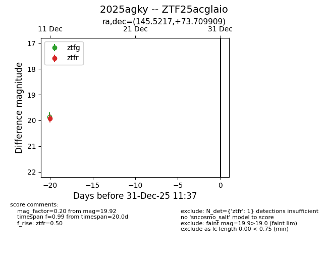
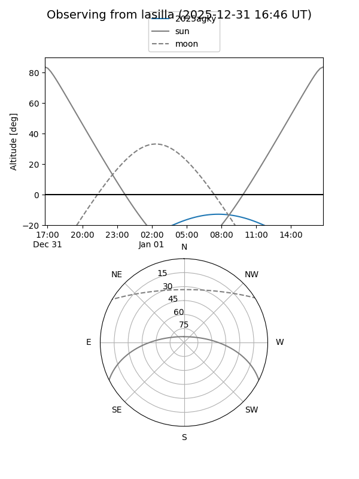
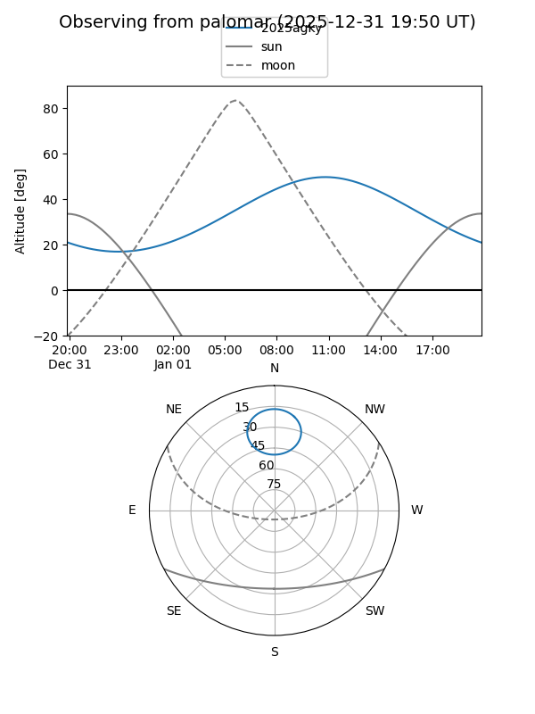

2025agky
Target 2025agky at 2025-12-27 16:14
Aliases and brokers:
FINK: fink-portal.org/ZTF25acglaio
Lasair: lasair-ztf.lsst.ac.uk/objects/ZTF25acglaio
ALeRCE: alerce.online/object/ZTF25acglaio
TNS: wis-tns.org/object/2025agky
YSE: ziggy.ucolick.org/yse/transient_detail/2025agky
alt names
ZTF25acglaio (ztf,fink_ztf)
2025agky (tns,yse)
Coordinates:
equatorial (ra, dec) = 145.5217,+73.70991
equatorial (HMS+DMS) = 09:42:05.22,+73:42:35.67
galactic (l, b) = (137.9735,+37.36239)
Flags:
Photometry:
last ztfr=19.92
1 ztfr detections
Lightcurve

Visibility


Additional plots